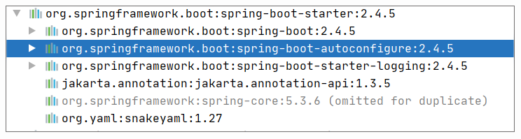
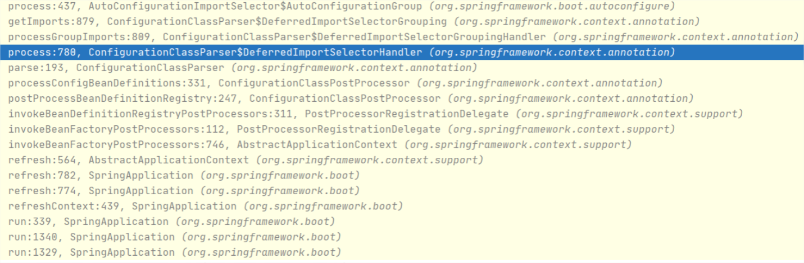
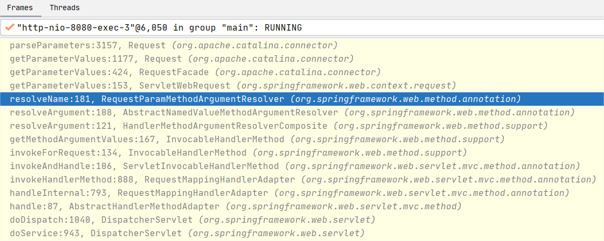

- 00 导读 5分钟轻松了解Spring基础知识.md.html
- 00 开篇词 贴心“保姆”Spring罢工了怎么办？.md.html
- 01 Spring Bean 定义常见错误.md.html
- 02 Spring Bean 依赖注入常见错误（上）.md.html
- 03 Spring Bean 依赖注入常见错误（下）.md.html
- 04 Spring Bean 生命周期常见错误.md.html
- 05 Spring AOP 常见错误（上）.md.html
- 06 Spring AOP 常见错误（下）.md.html
- 07 Spring事件常见错误.md.html
- 08 答疑现场：Spring Core 篇思考题合集.md.html
- 09 Spring Web URL 解析常见错误.md.html
- 10 Spring Web Header 解析常见错误.md.html
- 11 Spring Web Body 转化常见错误.md.html
- 12 Spring Web 参数验证常见错误.md.html
- 13 Spring Web 过滤器使用常见错误（上）.md.html
- 14 Spring Web 过滤器使用常见错误（下）.md.html
- 15 Spring Security 常见错误.md.html
- 16 Spring Exception 常见错误.md.html
- 17 答疑现场：Spring Web 篇思考题合集.md.html
- 18 Spring Data 常见错误.md.html
- 19 Spring 事务常见错误（上）.md.html
- 20 Spring 事务常见错误（下）.md.html
- 21 Spring Rest Template 常见错误.md.html
- 22 Spring Test 常见错误.md.html
- 23 答疑现场：Spring 补充篇思考题合集.md.html
- 导读 5分钟轻松了解一个HTTP请求的处理过程.md.html
- 知识回顾 系统梳理Spring编程错误根源.md.html
- 结束语 问题总比解决办法多.md.html
- 捐赠
23 答疑现场：Spring 补充篇思考题合集
你好，我是傅健。
欢迎来到第三次答疑现场，恭喜你，到了这，终点已近在咫尺。到今天为止，我们已经解决了 50 个线上问题，是不是很有成就感了？但要想把学习所得真正为你所用还要努力练习呀，这就像理论与实践之间永远有道鸿沟需要我们去跨越一样。那么接下来，话不多说，我们就开始逐一解答第三章的课后思考题了，有任何想法欢迎到留言区补充。
第18课
在案例 1 中使用 Spring Data Redis 时，我们提到了 StringRedisTemplate 和 RedisTemplate。那么它们是如何被创建起来的呢？
实际上，当我们依赖 spring-boot-starter 时，我们就间接依赖了 spring-boot -autoconfigure。

在这个 JAR 中，存在下面这样的一个类，即 RedisAutoConfiguration。
@Configuration(proxyBeanMethods = false)
@ConditionalOnClass(RedisOperations.class)
@EnableConfigurationProperties(RedisProperties.class)
@Import({ LettuceConnectionConfiguration.class, JedisConnectionConfiguration.class })
public class RedisAutoConfiguration {
@Bean
@ConditionalOnMissingBean(name = "redisTemplate")
@ConditionalOnSingleCandidate(RedisConnectionFactory.class)
public RedisTemplate<Object, Object> redisTemplate(RedisConnectionFactory redisConnectionFactory) {
RedisTemplate<Object, Object> template = new RedisTemplate<>();
template.setConnectionFactory(redisConnectionFactory);
return template;
}
@Bean
@ConditionalOnMissingBean
@ConditionalOnSingleCandidate(RedisConnectionFactory.class)
public StringRedisTemplate stringRedisTemplate(RedisConnectionFactory redisConnectionFactory) {
StringRedisTemplate template = new StringRedisTemplate();
template.setConnectionFactory(redisConnectionFactory);
return template;
}
}
从上述代码可以看出，当存在RedisOperations这个类时，就会创建 StringRedisTemplate 和 RedisTemplate 这两个 Bean。顺便说句，这个 RedisOperations 是位于 Spring Data Redis 这个 JAR 中。
再回到开头，RedisAutoConfiguration 是如何被发现的呢？实际上，它被配置在
spring-boot-autoconfigure 的 META-INF/spring.factories 中，示例如下：
org.springframework.boot.autoconfigure.EnableAutoConfiguration=\
org.springframework.boot.autoconfigure.admin.SpringApplicationAdminJmxAutoConfiguration,\
org.springframework.boot.autoconfigure.aop.AopAutoConfiguration,\
org.springframework.boot.autoconfigure.amqp.RabbitAutoConfiguration,\
org.springframework.boot.autoconfigure.data.r2dbc.R2dbcRepositoriesAutoConfiguration,\
org.springframework.boot.autoconfigure.data.redis.RedisAutoConfiguration,\
那么它是如何被加载进去的呢？我们的应用启动程序标记了@SpringBootApplication，这个注解继承了下面这个注解：
//省略其他非关键代码
@Import(AutoConfigurationImportSelector.class)
public @interface EnableAutoConfiguration {
//省略其他非关键代码
}
当它使用了 AutoConfigurationImportSelector 这个类，这个类就会导入在META-INF/spring.factories定义的 RedisAutoConfiguration。那么 import 动作是什么时候执行的呢？实际上是在启动应用程序时触发的，调用堆栈信息如下：

结合上面的堆栈和相关源码，我们不妨可以总结下 RedisTemplate 被创建的过程。
当 Spring 启动时，会通过 ConfigurationClassPostProcessor 尝试处理所有标记@Configuration 的类，具体到每个配置类的处理是通过 ConfigurationClassParser 来完成的。
在这个完成过程中，它会使用 ConfigurationClassParser.DeferredImportSelectorHandler 来完成对 Import 的处理。AutoConfigurationImportSelector 就是其中一种Import，它被 @EnableAutoConfiguration 这个注解间接引用。它会加载”META-INF/spring.factories”中定义的 RedisAutoConfiguration，此时我们就会发现 StringRedisTemplate 和 RedisTemplate 这两个 Bean 了。
第19课
RuntimeException 是 Exception 的子类，如果用 rollbackFor=Exception.class，那对 RuntimeException 也会生效。如果我们需要对 Exception 执行回滚操作，但对于 RuntimeException 不执行回滚操作，应该怎么做呢？
我们可以同时为 @Transactional 指定rollbackFor 和noRollbackFor 属性，具体代码示例如下：
@Transactional(rollbackFor = Exception.class, noRollbackFor = RuntimeException.class)
public void doSaveStudent(Student student) throws Exception {
studentMapper.saveStudent(student);
if (student.getRealname().equals("小明")) {
throw new RuntimeException("该用户已存在");
}
}
第20课
结合案例2，请你思考这样一个问题：在这个案例中，我们在 CardService类方法上声明了这样的事务传播属性，@Transactional(propagation = Propagation.REQUIRES_NEW)，如果使用 Spring 的默认声明行不行，为什么？
答案是不行。我们前面说过，Spring 默认的事务传播类型是 REQUIRED，在有外部事务的情况下，内部事务则会加入原有的事务。如果我们声明成 REQUIRED，当我们要操作 card 数据的时候，持有的依然还会是原来的 DataSource。
第21课
当我们比较案例 1 和案例 2，你会发现不管使用的是查询（Query）参数还是表单（Form）参数，我们的接口定义并没有什么变化，风格如下：
@RestController
public class HelloWorldController {
@RequestMapping(path = "hi", method = RequestMethod.GET)
public String hi(@RequestParam("para1") String para1){
return "helloworld:" + para1;
};
}
那是不是 @RequestParam 本身就能处理这两种数据呢？
不考虑实现原理，如果我们仔细看下 @RequestParam 的 API 文档，你就会发现@RequestParam 不仅能处理表单参数，也能处理查询参数。API 文档如下：
In Spring MVC, “request parameters” map to query parameters, form data, and parts in multipart requests. This is because the Servlet API combines query parameters and form data into a single map called “parameters”, and that includes automatic parsing of the request body.
稍微深入一点的话，我们还可以从源码上看看具体实现。
不管是使用 Query 参数还是用 Form 参数来访问，对于案例程序而言，解析的关键逻辑都是类似的，都是通过下面的调用栈完成参数的解析：

这里可以看出，负责解析的都是 RequestParamMethodArgumentResolver，解析最后的调用也都是一样的方法。在 org.apache.catalina.connector.Request#parseParameters 这个方法中，对于 From 的解析是这样的：
if (!("application/x-www-form-urlencoded".equals(contentType))) {
success = true;
return;
}
//走到这里，说明是 Form: "application/x-www-form-urlencoded"
int len = getContentLength();
if (len > 0) {
int maxPostSize = connector.getMaxPostSize();
if ((maxPostSize >= 0) && (len > maxPostSize)) {
//省略非关键代码
}
byte[] formData = null;
if (len < CACHED_POST_LEN) {
if (postData == null) {
postData = new byte[CACHED_POST_LEN];
}
formData = postData;
} else {
formData = new byte[len];
}
try {
if (readPostBody(formData, len) != len) {
parameters.setParseFailedReason(FailReason.REQUEST_BODY_INCOMPLETE);
return;
}
} catch (IOException e) {
//省略非关键代码
}
//把 Form 数据添加到 parameter 里面去
parameters.processParameters(formData, 0, len);
Form 的数据最终存储在 Parameters#paramHashValues 中。
而对于查询参数的处理，同样是在 org.apache.catalina.connector.Request#parseParameters 中，不过处理它的代码行在 Form 前面一些，关键调用代码行如下：
parameters.handleQueryParameters();
最终它也是通过 org.apache.tomcat.util.http.Parameters#processParameters 来完成数据的添加。自然，它存储的位置也是 Parameters#paramHashValues 中。
综上可知，虽然使用的是一个固定的注解 @RequestParam，但是它能处理表单和查询参数，因为它们都会存储在同一个位置：Parameters#paramHashValues。
第22课
在案例 1 中，我们解释了为什么测试程序加载不到 spring.xml 文件，根源在于当使用下面的语句加载文件时，它们是采用不同的 Resource 形式来加载的：
@ImportResource(locations = {"spring.xml"})
具体而言，应用程序加载使用的是 ClassPathResource，测试加载使用的是 ServletContextResource，那么这是怎么造成的呢？
实际上，以何种类型的Resource加载是由 DefaultResourceLoader#getResource 来决定的：
@Override
public Resource getResource(String location) {
//省略非关键代码
if (location.startsWith("/")) {
return getResourceByPath(location);
}
else if (location.startsWith(CLASSPATH_URL_PREFIX)) {
return new ClassPathResource(location.substring(CLASSPATH_URL_PREFIX.length()), getClassLoader());
}
else {
try {
// Try to parse the location as a URL...
URL url = new URL(location);
return (ResourceUtils.isFileURL(url) ? new FileUrlResource(url) : new UrlResource(url));
}
catch (MalformedURLException ex) {
// No URL -> resolve as resource path.
return getResourceByPath(location);
}
}
}
结合上述代码，你可以看出，当使用下面语句时：
@ImportResource(locations = {"classpath:spring.xml"})
走入的分支是：
//CLASSPATH_URL_PREFIX:classpath
else if (location.startsWith(CLASSPATH_URL_PREFIX)) {
return new ClassPathResource(location.substring(CLASSPATH_URL_PREFIX.length()), getClassLoader());
}
即创建的是 ClassPathResource。
而当使用下面语句时：
@ImportResource(locations = {"spring.xml"})
走入的分支是：
try {
// 按 URL 加载
URL url = new URL(location);
return (ResourceUtils.isFileURL(url) ? new FileUrlResource(url) : new UrlResource(url));
}
catch (MalformedURLException ex) {
// 按路径加载
return getResourceByPath(location);
}
先尝试按 URL 加载，很明显这里会失败，因为字符串spring.xml并非一个 URL。随后使用 getResourceByPath()来加载，它会执行到下面的 WebApplicationContextResourceLoader#getResourceByPath()：
private static class WebApplicationContextResourceLoader extends ClassLoaderFilesResourcePatternResolver.ApplicationContextResourceLoader {
private final WebApplicationContext applicationContext;
//省略非关键代码
protected Resource getResourceByPath(String path) {
return (Resource)(this.applicationContext.getServletContext() != null ? new ServletContextResource(this.applicationContext.getServletContext(), path) : super.getResourceByPath(path));
}
}
可以看出，这个时候其实已经和 ApplicationContext 息息相关了。在我们的案例中，最终返回的是 ServletContextResource。
相信看到这里，你就能明白为什么一个小小的改动会导致生成的Resource不同了。无非还是因为你定义了不同的格式，不同的格式创建的资源不同，加载逻辑也不同。至于后续是如何加载的，你可以回看全文。
以上就是这次答疑的全部内容，我们下节课再见！
© 2019 - 2023 Liangliang Lee. Powered by gin and hexo-theme-book.